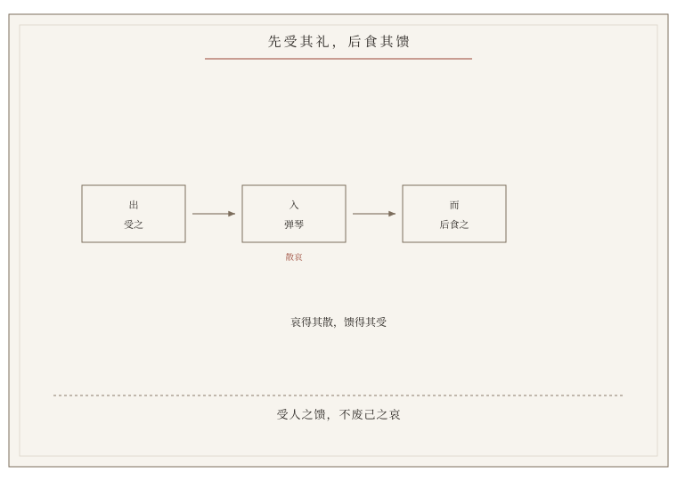

檀弓上 · 三·四十六 · 第 249 课
颜渊之丧，馈祥肉，孔子出受之。入弹琴而后食之。注「馈，遗也」「弹琴以散哀也」。
说什么事：除服之祭有人送来祭肉，孔子先受，再弹琴，然后才吃。
落在哪一层：礼，兼及礼意与哀之情。
为何编在此位：上节论哀戚为本，此节见本之不废。受人之馈是礼，弹琴散哀是情，二者不相掩。
【经】顏淵之喪，饋祥肉，孔子出受之。入彈琴而後食之。
【注】馈，遗也。弹琴以散哀也。
【疏】底本此节无疏文，郑注「馈，遗也」「弹琴以散哀也」二条而已。按《檀弓》他节之例，此当是颜渊除服之祭，其家以祭肉馈于夫子；夫子受之于外，弹琴于内，然后食之。注「散哀」二字，是解弹琴之故。
祥 除服之祭。期而小祥，再期而大祥。
祥肉 祥祭之肉。祭毕分致于尊者。
馈 注「遗也」。馈赠。
出受之 出而受之于外。受人之赐，不于内。
入弹琴 入而后弹。非以琴代哀，以琴散哀。
而后食之 弹毕乃食。食者，受其馈也。
颜渊之丧，其家行祥祭，以祭肉馈于孔子。孔子出去受了，进来弹了一回琴，然后才吃。
此节三事：出受、入弹、后食。次序最要紧。若先食而后弹，则受馈为口腹；若弹而不食，则却人之馈为矫。先受者，不拒人之礼；后食者，不废人之馈；中间一弹者，使哀得散而不至郁。注「散哀」二字下得极准：不是忘哀，是散哀。哀如气之结，结则伤，散则通。
第一层 祥之名义 祥者，除服之祭。期而小祥，再期而大祥。祥祭有肉，祭毕分致亲友，此礼之常。颜渊之丧至此已历期月，故有祥肉可馈。
第二层 出受 注不言「受于内」而言「出受之」，是受人之赐必于外，不使人入己之室。此与《曲礼》「赐人者不曰来取」一类，皆礼之体人。
第三层 弹琴散哀 丧中不乐，而此弹琴。注以「散哀」解之，最见分寸：琴者，所以宣郁，非所以为乐。若以此为乐，则丧中作乐，礼所不许；若以此为宣，则哀至而气结，宣之正所以全哀。
第四层 后食 「而后食之」四字，是受馈之实。弹在前、食在后，则食不为贪；受在前、弹在中、食在后，则礼、情、物三者各得其序。
与今日何干 凡遭丧而受人馈遗，最难处者是「吃不吃」。此节给的次序是：先受其礼，次理其情，然后享其物。三者不乱，则哀与礼两不相害。
| 左 | 右 |
|---|---|
| 馈祥肉 | 人之礼 |
| 出受之 | 受赐于外 |
| 入弹琴 | 散哀，非为乐 |
| 而后食之 | 不废人之馈 |
| 三事之序：受—弹—食 | 礼、情、物各得其序 |
画一处士人宅第的内外之间，视点平。门槛居中，门外站着一位来人（衣素、双手捧一只盖着的漆盘，盘上有布）、门内站着一位老者（衣素、已伸手接过盘）。门内左侧靠墙置一张琴，琴上覆着一方布。地上摊开一块席，席上一只空碗。不写文字、不画人面细节。赭色只用在漆盘的边缘与覆琴布的系带上。
